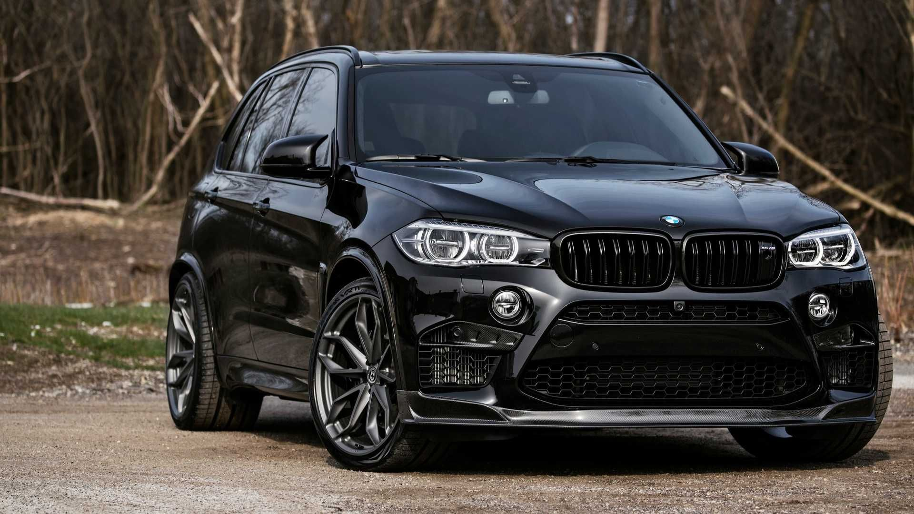

Технические характеристики
Тип: 4.4 л V8 с двойным турбонаддувом + электромотор (48V)
Мощность: 625 л.с. (Competition)
Крутящий момент: 750 Нм
Разгон 0-100 км/ч: 3.8 сек (с Launch Control)
Разгон 0-200 км/ч: 13.5 сек
Максимальная скорость: 250 км/ч (электроограничение)290 км/ч (с M Driver’s Package)
Привод: M xDrive (полный с заднеприводным режимом)
Краткая история BMW X7M
1. Первое поколение (G07, 2019–2023)
-Дебют BMW X7 в 2019 году – первый полноразмерный люксовый SUV BMW.
-X7 M50i (2019) – топовая версия до появления X7 M:
-4.4 л V8 битурбо (530 л.с.)
-Разгон 4.7 сек до 100 км/ч.
-В 2023 году представлен рестайлинг с новой решёткой и фарами.
2. X7 M (G07 LCI, с 2024)
-Первый официальный X7 M – аналог X5 M, но с 3 рядами сидений.
-Двигатель: 4.4 л V8 битурбо (S68) + 48V mild-hybrid
-Мощность: 625 л.с. (как у X5 M Competition)
-Разгон: 3.8 сек до 100 км/ч.
BMW X7M– это самый мощный и быстрый 7-местный SUV в линейке BMW M, Идеальный выбор: для тех, кому нужен семейный автомобиль с характером гоночного болида.🚙💨